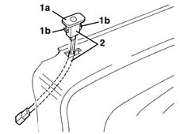
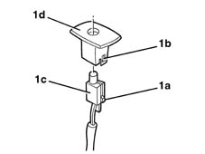

5580E18 anti-theft device w/l - r+r following electrical wiring check
- Path
- Procedures > 55 ELECTRICAL EQUIPMENT > 5580 SPECIAL ACCESSORIES > 5580E anti-theft device > 5580E18 anti-theft device w/l - r+r following electrical wiring check
- Kind
- repair procedure (removal / refitting; the operation number is the code)
- Applies to
- all engines; all production periods
- Interactive page
- https://sloeber94.github.io/elrnDB-lYpsln/en/#/2429462
Applies to: all engines; all production periods
 Removing
Removing
 Refitting
Refitting7005C44 interior handle panel - r r
7005M11 Driver's front door electric window control SWITCH - R.R.
7005M12 passenger side front door electrically operated window switch - r r
7005E12 corner cover of one front side door, lh or rh r r
7005E08 front side door interior panel r r
1. Working frm the door panel, take off panel (1a) by undoing retainers (1b).
2. Recover the panel unit with the warning light and cable.

Applies to: all engines; all production periods
1. Undo retainer (1a) from seat (1b) and remove led (1c) from panel (1d).

Applies to: all engines; all production periods
Refitting
RemovingCheck that the warning light is not damaged.
Position the led in the panel and engage the retainers.
Position the panel and engage the retainers.
7005E08 front side door interior panel r r
7005E12 corner cover of one front side door, lh or rh r r
7005M12 passenger side front door electrically operated window switch - r r
7005M11 Driver's front door electric window control SWITCH - R.R.